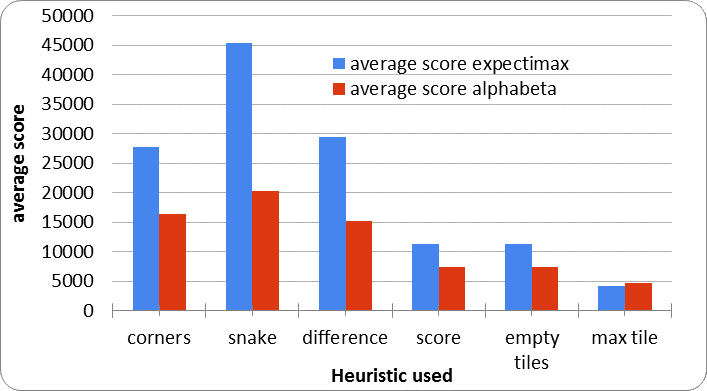
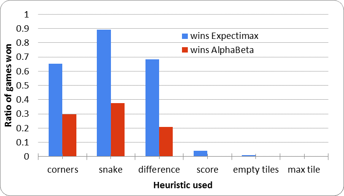
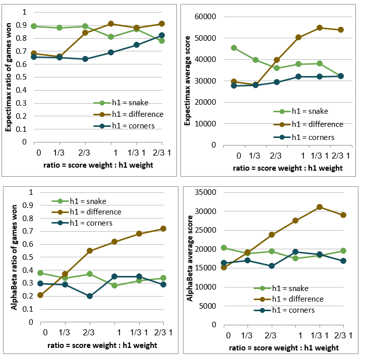

Introduction
In our project we decided to solve 2048 by using artificial intelligence. A year ago, like everyone else, we managed to get addicted to the 2048 game. This addiction made us choose that game as our final project and to try different approaches and methods for solving it as we describe next.
Approach and Method
In order to solve the game we used the following methods:
A. AlphaBeta pruning:
Alpha-beta pruning is just an optimized version of MiniMax algorithm which is a game with two players. The algorithm finds the best move for our player assuming that the opponent plays his best move. In a zero-sum game the best move of our player is the move with the highest heuristic value, while the best move of the opponent is the one with the lowest heuristic value (hence the name MiniMax).
In order to use alpha-beta pruning we must first identify the two players. The first player is our agent who plays the game. The second player is the 'computer agent' which randomly inserts valued tiles in the cells of the board. Our agent tries to maximize the heuristic value. On the other hand the 'computer agent' in the original game is not specifically programmed to block our agent but rather randomly inserts values on the empty cells.
So the question is why we use an AI technique which solves zero-sum games and which specifically assumes that both players select the best possible move for them? The answer is simple, despite the fact that it is only our agent who always plays his optimal move, the choices of the ' computer agent' can block the progress and stop our agent from completing the game. By modeling the behavior of the 'computer agent' as an optimal player we ensure that our choice will be a solid one independently from what the 'computer agent' plays.
Zero-sum game approach gives rise to the game tree. Depending on how far into the future we want to look when deciding the current move, the tree is expanded to several levels, where one level is one move of our agent followed by one move of the 'computer agent'. The branching factor at the move of our agent is 4, corresponding to sliding in the maximum of 4 possible directions. (If the current game state is such that sliding in some direction would not alter it, this direction is not available.) The 'computer agent' during his move inserts a tile of value 2 or 4 into any empty place so the branching factor at his move is twice the number of empty cells. The overall branching factor of the tree is thus of the order of 8 where is the size of the game board. This large branching factor justifies the use of alpha-beta pruning, which avoids expanding useless nodes.
B. Expectimax search:
The problem with the alpha-beta agent is that it is unnecessarily careful when choosing the next move. We know that the 'computer agent' is not optimal, but random. We would like our agent to make the best move while being subjected to a random event (the random tiles being added). Knowing the probabilities of the 'computer agent's' moves we can use expectimax algorithm to model the opponent's behavior more realistically. What this algorithm does is to recursively predict the future possible moves and to choose the next immediate one which will probably lead to the best outcome.
In the expectimax algorithm we expand the full game tree as described for MiniMax, but based on this tree we choose the next move differently. Moving from the leafs upwards, we take heuristic-value expectations over the possible 'computer agent' moves and maxima over our agent's moves. The expectations over the 'computer agent's moves are with respect to the new-tile probabilities taken from the source code of the original 2048 game. Since expectations are taken over all possible moves, there are no useless nodes that can remain unexpanded and the branching factor cannot be reduced.
Heuristics
- Score heuristic - returns the current score.
- Empty space heuristic - calculates the number of empty tiles.
- Difference heuristic – compute the difference between every two adjacent tiles and sum the results.
- Max Tile heuristic- returns the maximum value in the board.
- Corner heuristic- assigns higher values to tiles in one corner.
- Snake Heuristic- assigning ascending values in a folded-snake shape.
Results
The Expectimax, being realistic, performs much better than the pessimistic AlphaBeta agent, which assumes that the opponent always makes the move which is the worst for us. The AlphaBeta agent’s assumption simply does not correspond to the game we are playing and this is why its performance is worse for all the heuristics.
 While exploring combinations of different heuristics we found the effect of adding the score heuristic to each of the other heuristics. The result is shown in the figure bellow.
The snake heuristic combined with the score heuristic only worsens. On the other hand, corners heuristics and difference heuristics improve, which makes us believe that an addition of the score heuristics corrects for their small drawbacks. Note that adding the score heuristics especially improves the difference heuristics. The fact that there was so much room for improvement indicates that the difference heuristics on its own does not maximize the score enough.
Conclusions
We have shown that the Expectimax agent is more appropriate than the AlphaBeta agent for solving the game 2048, because the addition of the new tiles into the 2048 board is random. The best single heuristics to be used by the agent are the snake heuristics achieving the probability 0.9 of winning and the average score (over 100 games) of 45000. However, the same winning probability and the average score of 55000 can be achieved by a combination of corners and score heuristics.
Additional Information
References
[1] 2048 (video game) - Wikipedia, the free encyclopedia. Retrieved from
http://en.wikipedia.org/wiki/2048_(video_game) on 26.03.2015.
[2] J. Rosenschein: Introduction to Artificial Intelligence - Course 67842
course notes, Fall Semester 2014/15, Hebrew University of Jerusalem.